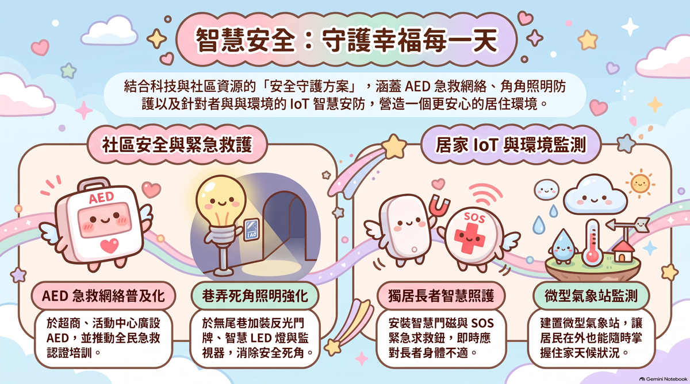

「整合 IoT、基礎建設與社區力量，我們正在打造一個真正守護生命的韌性城市。」
由外而內的空間防禦架構
第一層：社區層級
社區急救醫療
- 策略佈點：結合24小時超商與活動中心，廣設 AED 設備。
- 無縫接軌：將急救設備嵌入民眾日常路徑，確保黃金救援時間。
第二層：街道層級
無死角公共空間
- 消除隱形缺口：針對「巷弄」與「無尾巷」死角進行照明升級。
- 點亮歸家路：加裝智慧 LED、監視器與專屬反光門牌，確保夜間通行與救援安全。
第三層：居家層級
高齡智慧照護
- 隱蔽空間防護：針對獨居長者建立專屬 IoT 防護，將安全網延伸至家門內。
- 遠端即時守護：導入微型氣象站與智慧安防，防範「老了沒人照顧」的社會痛點。
硬體與軟體並行：四大科技防護亮點
推動全民急救認證
- 主動出擊：突發性心跳停止的存活率隨時間遞減，單靠救護車往返易錯失時機。
- 軟硬兼施：增設 AED 加上全民急救培訓，讓每位受訓居民都成為主動的救援節點。
智慧死角照明防護
- 智慧 LED：死角加裝自動感應與高亮度智慧照明。
- 反光門牌：專為無尾巷設計，微光下也能讓救護人員瞬間定位。
IoT 24小時無形守護
- 被動監測：到府裝設「獨居智慧門磁」，異常時自動發出警報。
- 主動求援：隨身定點配備「SOS鈕」，一鍵即可通報醫療單位。
微型氣象站環境關懷
- 在地數據：建置社區專屬的微型氣象站。
- 跨距關懷：在外上班的子女能透過手機即時掌握住家天候溫差。
傳統安防與智慧守護之比較
| 比較維度 |
傳統模式 |
💡 2026 智慧守護 |
| 急救機制 |
單純依賴 119 救護車 |
超商/活動中心廣設 AED + 全民急救認證 |
| 空間照明 |
專注於主要幹道與大街 |
深入無尾巷，加裝智慧 LED、監視器與反光門牌 |
| 長者照護 |
依賴人工訪視或電話問候 |
裝設智慧門磁與 SOS 鈕，24小時自動感測 |
| 環境數據 |
依賴大範圍的中央氣象預報 |
社區專屬微型氣象站，精準掌握在地住家天候 |
「這些科技並非孤立存在。當居家的 SOS 鈕被按下時，無尾巷的反光門牌與智慧照明引導著救援動線，而受過認證的鄰居已從超商取得 AED 趕赴現場，這才是完整交織的安全網。」
智慧安全守護藍圖

點擊圖片放大檢視